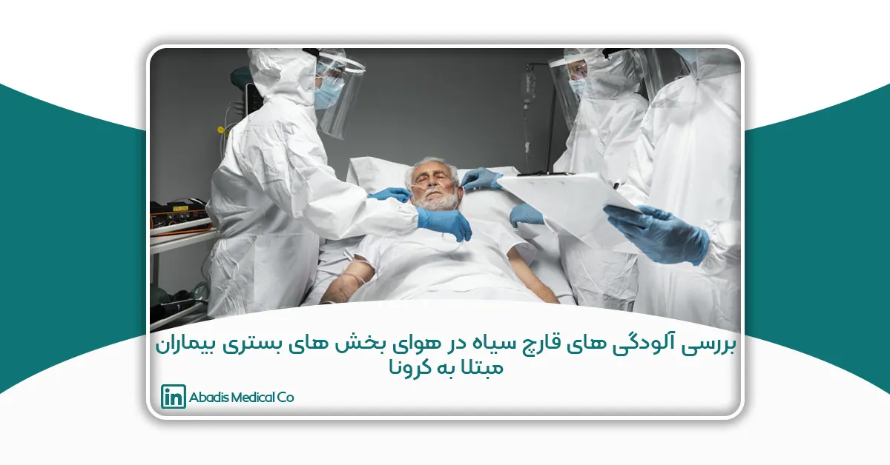
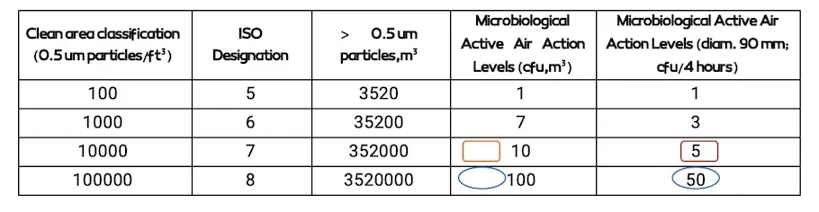
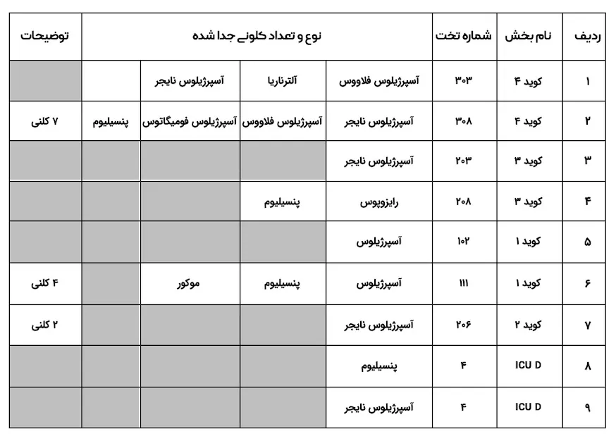
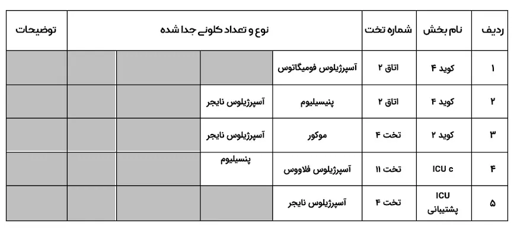
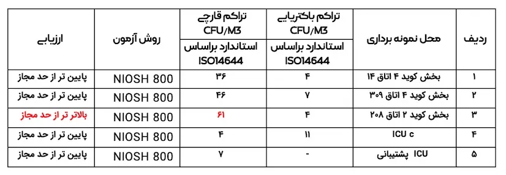

این مقاله توسط سرکارخانم شبنم بينايی تولايی، جناب آقای حسين شعبانی و سرکارخانم صفورا صفوی نوشته شده؛ و برای دهمین کنگره کنترل عفونت ارسال شده است.
بررسی آلودگی های قارچی به ويژه عوامل موكورال (قارچ سياه) در هوای بخشهای بستری بيماران مبتلا به كرونا در بيمارستان امام رضا (ع) شهر مشهد در سال1400چکيده
مقدمه:
عفونتهای قارچی مهاجم،يکی از مسائل حائز اهميت در بخشهای پر خطر بيمارستانی میباشند.
قارچهای فرصت طلب، اين عفونتها را در اكثر موارد در بيماران دچار نقص ايمنی و ساير نقصهای سلامتی به وجود میآورند. اسپورهای قارچی از جمله بيوآئروسلها بوده كه در همهجا يافت شده و انتشار وسيع آنها میتواند باعث ايجاد اشکال مختلف بيماری به ويژه در افراد با سيستم ايمنی پايين شود.
هدف:
هدف از انجام اين مطالعه، بررسي تنوع آلودگی های قارچی فرصت طلب به ويژه عوامل موكورال (قارچ سياه) در هوای بخشهای بستری بيماران مبتلا به كرونا بيمارستان امام رضا(ع) در شهر مشهد میباشد.
روش كار:
در اين مطالعه به منظور ارزيابي و تعيين تراكم آلاينده های قارچی از دستگاه نمونه بردار SPAR MAX VACUME PUMP ساخت كشور تايوان استفاده گرديد. دبي پمپ نمونه برداری ۲۸l/min/۳ و مدت زمان نمونه برداری ۱۰ دقيقه برای نمونه برداری هوای بيمارستان انتخاب شد. محيط كشت مورد استفاده سابورو دكستروز آگار حاوی كلرآمفنيکل مي باشد .
در اين پژوهش برای گرد آوری دادههای مورد نياز، از روش ميدانی استفاده شده است. مطالعه توصيفي حاضر به صورت مقطعي در شهريور – مهر ماه سال ۱۴۰۰ خورشيدی در موج پنجم بيماری كرونا انجام گرديد. جامعه مورد نظر شامل بخش های بستری بيماران كرونا به شرح ذيل مي باشد: كويد1، كويد2، كويد 3،كويد4، ICU1 و ICU2 كه در زمان انجام نمونه برداری، بيمار در اين بخش ها بستری بوده است..لازم به ذكر است نمونه برداری در دو روز متفاوت در پيک بستری بيماران مبتلا به كرونا انجام گرديد.
نتيجه گيری:
نمونه برداری نوبت اول در مورخه ۱۴۰۰/۰۷/۰۲ از هوای بخش های كويد1، كويد2، كويد 3،كويد4، ICU1 و ICU2 انجام شدكه نوع كلني های مشخص شده شامل: آسپرژيلوس،پنيسيليوم و موكور به تعداد 4 كلنی در بخش كويد 1 گزارش گرديد.
گونه های تشخيص داده شده از هوای بخش كويد 4 به شرح ذيل مي باشد: آسپرژيلوس نايجر، آسپرژيلوس فلاووس، آسپرژيلوس فوميگاتوس و پنيسيليوم كه تعداد 7 كلني رويت شد و شواهدی دال بر وجود موكور گزارش نگرديد.
نمونه برداری مرحله دوم در مورخه ۱۴۰۰/۰۷/۱۰ از هوای بخش های كويد1، كويد2، كويد 3،كويد4، ICU1 و ICU2 انجام شدكه نوع كلني های مشخص شده شامل: موكور و آسپرژيلوس نايجر به تعداد 61 CFU/M3 در هوای بخش كويد 2 گزارش گرديد.
بيشترين تراكم قارچي در بخش كويد 2 (اتاق 208) به ميزان 61 CFU/M3 و تعداد 17 كلني مشاهده گرديد . كمترين تراكم قارچي در بخش ICU C به ميزان ۴ CFU/M3 و تعداد ۱ كلنی با تشخيص آسپرژيلوس فلاووس و پنيسيليوم مشخص گرديد.
تراكم باكتريايي در كليه نقاط نمونه برداری پايين تر ازحد استاندارد ISO14644 گزارش شد.
كليد واژه ها: آلودگي قارچی، قارچ سياه، عوامل موكورال، عفونت بيمارستانی، بخش كويد
مقدمه و بيان مسئله:
بيوآئروسولها درواقع ذراتي با وزن مولکولي بالا شامل: باكتريها، ويروسها، قارچها، آلرژنها، آندوتوكسين باكتريايي، سموم قارچي و … میباشند که دارای اشکال،اندازه و طبقه بندی های مختلفی هستند.
آلودگي قارچي در بيمارستانها و مراكز درماني موضوع مطالعات مختلفي بوده و نشان داده شده اگرچه اسپور قارچها در همه جا حضور دارند و در افراد سالم بيماری ايجاد نميکنند، با اين حال بسياری از عفونتهای بيمارستاني به ويژه در افراد با نقص سيستم ايمني توسط قارچها از جمله گونههای آسپرژيلوس، فوزاريوم و موكورال ها ايجاد ميشوند. عفونت های قارچی مهاجم يکی از مسائل نگرانكننده در بخشهای پر خطر بيمارستانی هستند.
قارچ ها قدرت تطابق بالايي نسبت به شرايط گوناگون زيست محيطي دارند. با اين حال آلودگی قارچي در محيط های داخلي به عوامل متعددی از جمله رطوبت، تهويه، درجه حرارت، وجود ماده آلی در مصالح ساختماني و فعاليت های ساخت و ساز بستگی دارد.
گونههای مخمر كانديدا، گونههای آسپرژيلوس ، زايگوميستها شامل موكور و رايزوپوس قارچهای مهمي هستند كه موجب عفونت های قارچي مهاجم مي شوند، در درجه بعدی اهميت، مي توان فوزاريوم ها را نيز به اين فهرست افزود.
موكورمايکوزيس (زايگومايکوزيس) توسط گونه های رده Mucorales از جمله رايزوپوس و موكور ايجاد مي شود. اين عفونت در كشورهای در حال توسعه شيوع بيشتری دارد و بيشتر مبتلايان به نقص ايمنی و بدخيمی های خوني را درگير میكند.
پيشينه تحقيق:
در مطالعه ای كه بصيری و همکاران در بيمارستان عشاير شهر خرم آباد استان لرستان انجام دادند، بخش عفونی بيمارستان، آلودهترين بخش و اتاق عمل پاكيزه ترين بخش از نظر آلودگی قارچی بود.
در مطالعه ای كه نصرالهی عمران در شهر تنکابن با تمركز بر گونه های آسپرژيلوس موجود در ICU ها انجام داد، از كل ۱۶۰ نمونه آسپژيلوس جدا شده، پنج مورد آسپرژيلوس فلاووس، سه مورد آسپژيلوس سيدوئي، دو مورد آسپرژيلوس اوريزه آ و يک مورد آسپرژيلوس فوميگاتوس بودند.
در پژوهشي كه رضايي و همکاران در خصوص بررسي آلودگي قارچي در هوای بخش های ويژه بيمارستان های آموزشي اراک انجام دادند ، ارگانيسم های بيماری زايي كه از ۱۰۲ نمونه بخش های پرخطر بيمارستان جدا شدند،شامل: آسپژيلوس نايجر هشت مورد، آسپرژيلوس فلاووس چهار مورد، آسپرژيلوس فوميگاتوس دو مورد، موكور يک مورد، رايزوپوس دو مورد، فوزاريوم يک مورد بودند.
در مطالعه گنج بخش و همکاران، آلودگي های قارچي در هوای اتاق های عمل 13 بيمارستان در شهر مشهد مورد بررسی قرار گرفت.در اين مطالعه گونه های آسپرژيلوس و پني سيليوم ، بيشترين ميزان آلودگي و آلترناريا كمترين ميزان آلودگی در اتاق های عمل را داشتند .
هدف اصلی:
بررسي تنوع و تراكم آلودگي های قارچي فرصت طلب به ويژه عوامل موكورمايکوزيس(قارچ سياه) در هوای بخش های بستری بيماران مبتلا به كرونا بيمارستان امام رضا(ع) در شهر مشهد
روش تحقيق:
اين مطالعه از نوع توصيفي مقطعي مي باشد كه در سال ۱۴۰۰ خورشيدی و در بخش های بستری بيماران كرونای بيمارستان امام رضا (ع) در شهر مشهد انجام شد.
در اين پژوهش برای گرد آوری دادههای مورد نياز، از روش ميداني استفاده گرديد. مطالعه توصيفي حاضر به صورت مقطعي در شهريور ،مهر ماه سال ۱۴۰۰ خورشيدی در موج پنجم بيماری كرونا انجام شد.
جامعه مورد نظر شامل: بخش های بستری بيماران كرونا (كويد1، كويد2، كويد 3،كويد4، ICU1 و ICU2 بيمارستان امام رضا (ع))مي باشد. هنگام نمونه برداری، اطلاعات هريک از نمونه ها شامل نوع محيط كشت، زمان و مکان نمونه برداری، مدت زمان نمونه برداری، نوع تهويه، تعداد كاركنان هر بخش جمع آوری شد.
در اين مطالعه به منظور ارزيابي و تعيين تراكم آلاينده های هوابرد ذره ای هوای بخش، از دستگاه نمونه بردار SPAR MAX VACCUM PUMP ساخت كشور تايوان استفاده گرديد. دبي پمپ نمونه برداری L/min ۲۸.۳ و مدت زمان نمونه برداری ۱۰ دقيقه برای نمونه برداری هوای بيمارستان انتخاب شد. جهت نمونه برداری، دستگاه نمونه بردار در ارتفاع ۲۰.۱ متری از سطح زمين و با فاصله بيش از يک متر از ديوارها و موانع استقراريافت.
برای گندزدايي غربال دستگاه نمونه بردار، از الکل اتانول ۷۰ درصد استفاده گرديد.محيط كشت مورد استفاده نمونه ها ساخت شركت مرک در كشور آلمان و شامل سابرودكستروز آگار برای عوامل ميکروبي قارچي بوده است .
در محل نمونه برداری پليت های استريل حاوی محيط كشت در داخل دستگاه قرار گرفته و پس از نمونه برداری طبق روش 800 NIOSH، پليتها از داخل دستگاه خارج و پس از بستن درب آن ها، به آزمايشگاه منتقل شدند. نمونه های جمع آوری شده در اسرع وقت به داخل دستگاه انکوباتور (كه از قبل دمای آن در ۳۵ تا ۳۷ درجه سانتيگراد تنظيم شده بود) انتقال يافتند.
بعد از گذشت حدود ۵ الی ۶ روز برای محيط های كشت حاوی قارچ، اين محيط ها مورد بررسي قرار گرفته و كلوني های تشکيل شده بر روی آنها شمارش شدند. به منظور شمارش كلوني های تشکيل شده از روش چشمي استفاده شده است. برای محاسبه تراكم كلوني های شمارش شده بر روی محيط كشت و ثبت آن در جدول مربوطه، ابتدا حجم هوای نمونه برداری با توجه به دما و فشار محيط تصحيح و سرانجام تراكم برحسب3 Forming Colony CFU/M (Unit) محاسبه شد. برای تشخيص افتراقي اوليه قارچ ها از روش های شناسايي منظره ظاهری كلوني در روی پليت و شکل های ميکروسکوپي آنها استفاده شد.
جهت محاسبه تراكم بيوآئروسل ها در هوای بخش از رابطه زير استفاده شد:
= حجم هوای نمونه برداری شده/ تعداد كلني های شمارش شده
حدود مجاز پيشنهادی: حد مجاز پيشنهادی ارائه شده برای تراكم آلودگي قارچي توسط (ISO) 14644 مقدار 50 CFU/M3 مي باشد.
حجم نمونه و روش آماری:
تعداد پليت های مورد استفاده ۲۰ عدد مي باشد .
لازم به ذكر است كه در تاريخ ۱۴۰۰/۰۷/۰۳ (نمونه برداری مرحله اول) در بخش مراقب ويژه ICU بيمار مبتلا يا مشکوک به موكور سياه مشاهده نگرديد.
همچنين در مقطع زماني ۱۴۰۰/۰۷/۱۰ (نمونه برداری مرحله دوم) بخش كويد ۱ فاقد بيمار مشکوک يا مبتلا به موكور و بخش كويد 3 غيرفعال (تعطيل) مي باشد .
تحليل داده ها با استفاده از نرم افزار Excel و آمار توصيفی انجام گرديد.
ISO 14644
Air Classification
جدول ۱ (طبقه بندی استاندارد های هوا)

جدول ۲ (تعداد و نوع كلنی جدا شده از هوای اتاق بيماران)
تاريخ اندازه گيری: ۱۴۰۰/۰۷/۰۲

جدول 3 (تعداد و نوع كلنی جدا شده از هوای اتاق بيماران)
تاريخ اندازه گيری: ۱۴۰۰/۰۷/۱۰

جدول ۴(نتايج اندازه گيری عوامل بيولوژيکی)
زمان اندازه گيری: سال ۱۴۰۰ خورشيدی(۱۴۰۰/۰۷/۱۰)
زمان نمونه برداری: شيفت صبح
روش نمونه برداری و اندازه گيری: نمونه برداری و آناليز آزمايشگاهي مطابق با روش های استاندارد NIOSH
محل نمونه برداری: منطقه تنفسي افراد در محل
نتايج اندازه گيری: مطابق جدول ذيل:

نتايج نمونه برداری ۱۴۰۰/۰۷/۱۰:
نمونه ۱:تعداد ۱ كلنی باكتری، ۱۰ كلنی قارچ
نمونه ۲: تعداد ۲ كلنی باكتری، ۱۳ كلنی قارچ
نمونه ۳: تعداد ۱ كلنی باكتری، ۱۷ كلنی قارچ
نمونه ۴: تعداد ۳ كلنی باكتری، 1كلنی قارچ
نمونه ۵: تعداد ۲ كلنی قارچ
نتيجه گيری:
پايش و بررسی دورهای عملکرد سيستم های تهويه، تجهيز اتاق های ايزوله تنفسی مطابق با استانداردهای WHO، استفاده و نصب سيستم های تصفيه هوا (هواساز فشار منفی) و تعويض به موقع فيلترهای هپا، پيشبينی اگزاستهای قوی در جهت بهبود تهويه بخش، نظافت، واشينگ و گندزدايی بخش بستری و استفاده از دستگاه های ضدعفوني كننده هوا میتواند نقش موثری در كنترل و بهبود وضعيت موجود و جلوگيری از عفونت های بيمارستانی داشته باشد.
نتايج حاصل از اين مطالعه را میتوان، به منظور ارزيابی اثرات آلاينده هوابرد، بر ايمنی و سلامتی بيماران وپرسنل و تعيين اقدامات مداخلهای و اصلاحي جهت انتخاب سيستم تهويه مناسب مورد استفاده قرار داد. در واقع تراكم زياد افراد در بخش ها اعم از بيماران، پرسنل در افزايش عوامل بيولوژيک موثر است. در صورتي كه وضعيت آلودگي ميکروبي هوای داخلي بيمارستان ناديده گرفته شود،علاوه بر اختلال در روند بهبود بيماران، ايجاد عفونت های مختلف، موجب پيشرفت بيماری، طولاني شدن زمان بستری و افزايش هزينه های درمان مي شود.
فهرست منابع :
(1)Morace G,Borghi E,Fungal infections in ICU patients:Epidemiology and the role of diagnostics.Minerva Anestesiol.2010;76(11):950-6.
(2)Shoham S ,Marwaha S,Invvasive fungal infections in the ICU .J INTENSIVE Care Med.2010;25(2):78-92
Skiada A, Floerl-Lass C Klimko N, Challenges in the diagnosis and treatment of mucormycosis . Med my col.2018;56 (51)
Basiri H,Godini H, Omidi Khaniabadi Y, Sepahvand A. Study of indoor and ambient air fungual and bioaerosols and its relation with particulate matters in hospital of 2017
(5)Mosayebi M,Eslamirad Z,Ghorbanzadeh B,evaluation of fungal contamination in hospital wet cooling systems in Markazi province , central iran,2017